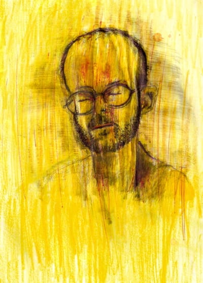
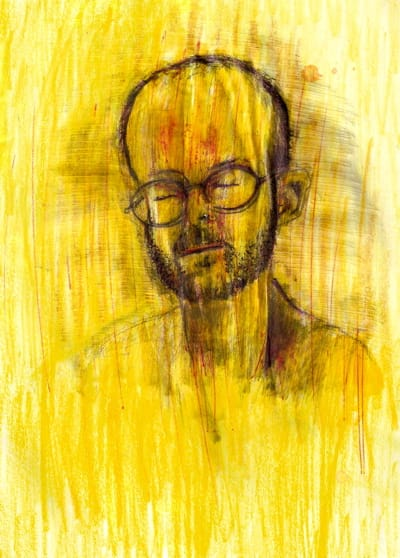

Автопортреты

Чувак 16 лет рисует себя каждый день.
Этот портрет под буспироном (гуглится), в похожих аналогичных условиях есть еще.

Чувак 16 лет рисует себя каждый день.
Этот портрет под буспироном (гуглится), в похожих аналогичных условиях есть еще.